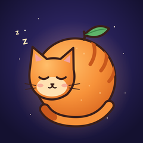

Tangerine Cat Radio
Original lofi beats to study, work and relax, with Tangy, our sleepy orange cat.
New music every week.
About
Every week Tangy opens a new room in his little world: rainy nights, warm lamps and slow, dusty beats. All music and animation are 100% original, made from scratch for this channel.
Música lofi original para estudiar, trabajar y relajarte, junto a Tangy, nuestro gato naranja.